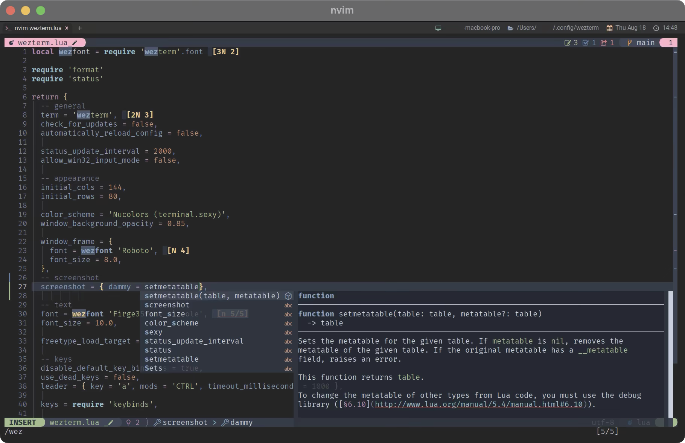
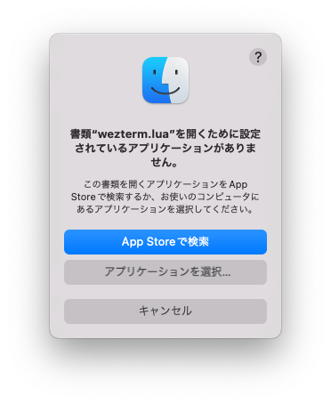
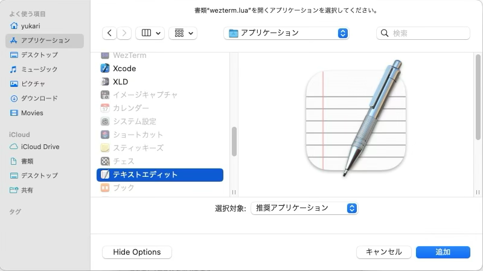
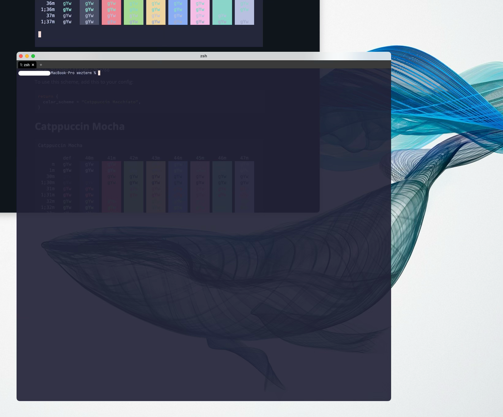
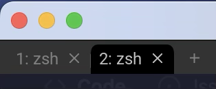
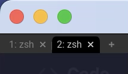
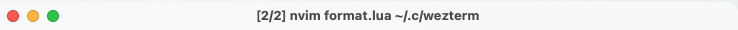
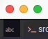
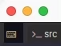
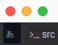

Introduction
このページでは、わたしが普段使っているターミナル環境を元にした設定例を紹介しています。

Screenshot of wezterm on macOS, running neovim.
全ての設定を網羅しているわけではなく、あくまで自分で使っている設定に対しての解説です。
見てくれた人のヒントになったり、何かの役に立ったりしたら嬉しいです。
一つの目安として、homebrew などのパッケージ管理操作ができる程度を想定しています。
Weztermの設定については、ほぼluaファイルの編集で完結するため、ターミナルコマンドを使う場面は限られていますし、
コマンドの例示も全て行っているつもりではありますが、
それでもコマンドを使って操作したことがない場合はやはり怖いです。
逆に、ファイルの編集自体はvimなどのターミナル上で動くソフトウェアではなく、XcodeやVisual Studio Codeなどでも構いません。
これについては3.Base Settingsで示します。
わたしの使用している環境がmacOSなので、説明やイメージもこれを使用しています。
必要なソフトウェアと設定さえ整っていれば 他の OS でも通用するはずですが、 100% 自信を持っているわけではないので、その点ご了承ください。
Thanks
Thanks to application developers!! I enjoy using it💓
WezTerm - Wez's Terminal Emulator
Neovim - hyperextensible Vim-based text editor
And thanks to the developers of the applications used to create this website🤗
Installation
まずはWezTermです。
インストールはhomebrewなどのパッケージ管理システムや、ホームページ上で提供されている実行ファイルをダウンロードする方法があります。
WezTerm is available pre-built for the major platforms and, because it is open source, you may also build it for yourself.
WezTermは主要なプラットフォーム用にあらかじめビルドされていますが、オープンソースであるため、自分でビルドすることも可能です。
環境に合わせて、好きな方法でインストールしてください。
では、起動してみましょう。(ユーザー名だけちょっと雑に隠しますが気にしないでください。)

動きましたね。 まだまだ味気ないですが、設定を重ねていくと面白みが増してきます。
少し補足すると、上のスクリーンショットはWezTerm上でzshが動いている状態です。
シェルの設定なども含め、まだ何もいじっていない状態であればこんな感じになると思います1。
では、次からWezTermの設定を行なっていきましょう。
Unix だとbashが動いているでしょうか。
Base Settings
特に難しいことを考えずに ホームフォルダに .wezterm.lua を置いても良いのですが、
後々ファイルを複数配置していくので、$HOME/.config/weztermというディレクトリを作って、そこに wezterm.lua を置くほうがおすすめです。
以下のようにしてみましょう。
もし、手順が必要なら下へ。
手順
以下のコマンドを順に実行してください。
GUI のエディタを使用したい場合は以下で出来ます。luaファイルに関連付けられたアプリケーションが起動するはずです。
ファイルを作る:
touch ~/.config/wezterm/wezterm.lua
ファイルを開く:
open ~/.config/wezterm/wezterm.lua
もし、こんなのが出てきたら

普段使っているエディタを選びましょう。
XcodeやVisual Studio Codeなどでもいけるはずです。

Window
ここではウィンドウの設定を行なっていきます。
Color Schemes
Wezterm では数多くのカラースキームを内蔵しているため、簡単に設定が可能です。
以下から好きなカラースキームを選んで指定します。
735 Color schemes listed by first letter
7351種類のカラースキーム一覧
お気に入りのカラースキームは見つかりましたか？
わたしはCatppuccin Mochaを愛用しているので、以下のようになりました。
window_background_opacity
If your Operating System provides Compositing support then WezTerm is able to specify the alpha channel value for the background content
オペレーティングシステムがコンポジットをサポートしている場合、WezTerm は背景コンテンツのアルファチャンネル値を指定することができます。
透過値はお好みで。わたしはこんな感じで。
一旦確認…
さて、ここまでで wezterm.lua は以下のようになりました。

カラースキームは白文字しかない状態だと「ちょっと何言ってるかわかんない」ですが、透過については確認できましたね。
次は、せっかく設定したカラースキームを見たいので、少し脇に逸れてプロンプトを変えてみましょう。
2022/09/23時点
Shell Prompt
WezTermの設定からは少し逸れますが、先にシェルプロンプトのカスタマイズをやってしまいましょう。
Starship
技術系サイトを見ていると、こぞって紹介されている感のあるStarShipです。
まあ、これは紹介したくなりますよね〜。導入が簡単なのに綺麗だし🥴
The minimal, blazing-fast, and infinitely customizable prompt for any shell!
あらゆるシェルのための、最小限の、高速な、そして無限にカスタマイズ可能なプロンプト!
覗いてみると
Prerequisites
- A Nerd Font installed and enabled in your terminal.
前提条件
- Nerd Fontがインストールされ、端末で有効になっていること。
と書いてありますね。
本来なら「なんかめんどくさそうだな〜」となるところですが...、
なんと❗️WezTermは既にNerd Font Symbols Fontを持っています❗️
WezTerm includes Nerd Font Symbols Font as a default font fallback which means that these special symbols are available even without requiring you to use a patched font.
WezTerm は Nerd Font Symbols Font をデフォルトのフォントのフォールバックとして含んでおり、 これはパッチされたフォントを使わなくてもこれらの特殊記号が利用可能であることを意味します。
...とのことなので安心してください。入ってますよ。☺️
とは言いつつ、わたしは別のフォントを使っているので3.3 Fontで紹介したいな〜と思ってます。
インストール
これはstarshipの説明通りにやっていけば大丈夫ですね。
Step 1.
ターミナルから
と、やってもいいのですが、わたしはhomebrewでやっちゃいます。
いきなり説明通りから外れましたね！どんまい✨
Step 2.
zshを使っている場合は~/.zshrcに以下を追記するだけです。
Step 3.
コンフィグファイルは、また別の機会に。
WezTermを一旦終了して再度起動し直しましょう。

3.1 Windowで設定したカラースキームが適用されているのを確認できましたね。
あと、月が綺麗ですね。(weztermディレクトリに行くと手っ取り早く見られます。)
Font
基本的には好きなフォントを使ってもらえれば良いです。
以下に再掲しますが、starshipを使用する場合もWezTermであればNerd Fontを考慮する必要がありません。
WezTerm includes Nerd Font Symbols Font as a default font fallback which means that these special symbols are available even without requiring you to use a patched font.
WezTerm は Nerd Font Symbols Font をデフォルトのフォントのフォールバックとして含んでおり、 これはパッチされたフォントを使わなくてもこれらの特殊記号が利用可能であることを意味します。
ただ、デフォルトのRobotoだと環境にもよるかもしれませんが、日本語がイマイチ...😢

なんてことがあるので、次項に続くわけです。
プログラミングフォント Firge (ファージ)
例として、わたしが普段お世話になっているフォントを紹介します。
Fira Mono と源真ゴシックを合成したプログラミングフォント Firge (ファージ)
「ダウンロードはこちら」というリンクから、お言葉に甘えてFirgeNerd_v0.2.0.zipをダウンロードしましょう。感謝❤️
インストール
フォントのインストールは OS の作業になるので、macOSのやり方だけ軽く載せます。
...基本的にはどのOSでも、ダウンロードしてきたファイルを開けば「インストールしますか？」的なの出てきますよね。多分。
やればできる!!


ほらできた🤗
WezTerm 設定
で、このフォントをWezTermに設定すれば良さそう。
This function constructs a lua table that corresponds to the internal FontAttributes struct that is used to select a single named font.
この関数は、単一の名前付きフォントを選択するために使用される内部 FontAttributes 構造体に対応する lua テーブルを構築します。
-- 説明簡略のためサンプルとは少し記述を変えてますが、どちらでも構いません。
font = require("wezterm").font("Firge35Nerd Console"),
わたしはFirge35NerdConsole-Regular.ttfをインストールして、WezTermにファミリー名のFirge35Nerd Consoleを指定しています。

フォントサイズも指定できるので一緒に入れておきましょう。
Specifies the size of the font, measured in points.
You may use fractional point sizes, such as 13.3, to fine tune the size.
フォントのサイズをポイント数で指定します。
13.3 のような小数点のサイズを使用して、サイズを微調整することができます。
上の例はデフォルト値そのままですが、お好みで調整してください。

Window Frame
コンソールがいい感じになってきたので、次はウィンドウフレーム周りの設定をしていきましょう。
This setting is applicable primarily on Wayland systems when client side decorations are in use.
この設定は、主にクライアント側の装飾が使用されているWaylandシステムで適用されます。
...いや、一回細かく変えてみたこともあったんですが、最終的にはデフォルトでいいかーってなりました。
Font
これもほぼデフォルトのままで、フォントサイズだけ変える程度にしています。
前回やっているフォント設定と同じですね。
The following options affect the fancy tab bar:
次のオプションは、ファンシータブバーに影響します。
window_frame = {
-- デフォルト値のままなので記述しなくても平気ですが、後で変えたくなった時にわかりやすいので。
font = wezfont 'Roboto',
-- サイズはだいぶ小さくしちゃってます。
font_size = 8.0,
},
Fancy or Retro
前項で、突然ファンシータブバーという文言が出てきましたが、WezTermのタブバーには、ファンシーとレトロの2種類があります。
When set to true (the default), the tab bar is rendered in a native style with proportional fonts.
true（デフォルト）に設定すると、タブバーはプロポーショナルフォントを使用したネイティブスタイルでレンダリングされます。
When set to false, the tab bar is rendered using a retro aesthetic using the main terminal font.
false に設定すると、タブバーはメインのターミナルフォントを使用したレトロなスタイルで表示されます。
わたしはファンシー派かなぁ😆 なので何もしません。
レトロ派の方は以下を記述しましょう。
before:

after:

Key Binding
ここはちょっと難しいというか、どこまでWezTermをメインに持ってくるのかみたいなところがあります。
例えばtmux。
WezTerm自体がtmuxと同等かそれ以上の機能を持っているので、
WezTermに対してtmuxと同じキーバインドを与えてしまえば、これは不要になるわけです。1
と言ってもわたしがローカルでしか使っていないから大丈夫なだけで、ネットワークを介して使う場合は困る事もあるかもしれません。
実際、デフォルトでは徹底的に他のソフトウェアとの衝突を避けています。
The default key assignments are shown in the table.
デフォルトのキー割り当ては、表のとおりです。
現在のキーバインド確認
まずは現在のキーバインドがどうなっているのかを確認します。
Prints the complete set of key assignments based on your config file.
設定ファイルに基づいたキー割り当ての完全なセットを表示します。
実行してみましょう。そのままWezTermでweztermコマンドを使えば良いです。

そう、これが現在のキーバインドですね。
設定を落とし込む
で、ここで提案なんですが、キーバインドを自分の設定ファイルに落とし込んじゃったらどうかな？と思うわけです。
それをやるにはどうすれば簡単かな〜っていう話になるんですけど、方法はすでにありました。

さすがですね☺️ もはやレールは存在していました。これをkeybinds.luaに持っていけば良いだけです。
これはもうプロっぽく片付けましょう。シェル芸というやつです✨
上記コマンドのファイル出力先は現在のディレクトリです。
~/.config/weztermに移動するか、出力先を~/.config/wezterm/keybinds.luaに指定してください。
これだけでもう直接流し込めちゃうんですね。簡単〜😆
読み込み先を切り替える
ここまでは暗黙的にデフォルト設定が適用されていましたが、これからは自分で作ったkeybinds.luaを使っていきましょう。
冒頭のリンクを再掲しますが、一番下にこのようにあります。
If you don't want the default assignments to be registered, you can disable all of them with this configuration; if you chose to do this, you must explicitly register every binding.
デフォルトの割り当てを登録したくない場合は、この設定ですべての割り当てを無効にできます。これを選択した場合は、すべてのバインディングを明示的に登録しなければなりません。
デフォルト設定は以下で完全に無効化されます。不安に感じるようであればスキップしても大丈夫です。
実際、わたしもWezTermを使う前はiTerm2の上でtmuxを動かしていました。
Leader Key
さて、前回はキーバインドを落とし込んだわけですが、今回はLeaderキーです。
A leader key is a a modal modifier key. If leader is specified in the configuration then pressing that key combination will enable a virtual LEADER modifier.
Leaderキーは、モーダルモディファイアキーです。Leaderキーが設定されている場合、そのキーの組み合わせを押すと、仮想的なリーダーモディファイアが有効になります。
Leaderキーという概念は WezTerm 特有のものではく、tmuxやvimなど古参のソフトウェアでも用いられています。
WezTerm でのデフォルトはCTRL-aです。1
ということで、わたしはもうそのままCTRL-aで設定しています。
デフォルトのままでいいやー、って場合は書かなくてもOKです。
vimやtmux等を使用する場合は、これとバッティングしていないかチェックしときましょう。
macOSでUS配列なのに日本語IME使うような環境2ではCTRL-Spaceが入力ソースの切り替えに割り当てられています。
OSのショートカットキー等も含め、あらかじめ確認しておきましょう。
他のと被っちゃうと困っちゃいます。
timeout_milliseconds
これは前項で挙げたマニュアルの文章を引用しますが、
LEADER stays active until a keypress is registered (whether it matches a key binding or not),
or until it has been active for the duration specified by timeout_milliseconds, at which point it will automatically cancel itself.
Leaderキーが一回押されたら、とりあえず何か次のキーが押されるか、指定ミリ秒経過するまでは待つよ〜。ってことですね。
例えば、
...と、やる場合、CTRL-a → spaceと順番にキーを押す必要があるわけですが、
デフォルトでは、CTRL-aからspaceを押すまでが 1000ミリ秒( = 1秒)以内で完結しないといけないわけです。
1秒を長いと見るか短いと見るかは人それぞれなので、これをお好みに調整できるのが、前項のtimeout_millisecondsです。
で、もう一回キーバインド
さて、皆さんはお気づきだろうか…。
デフォルトのキー設定ではLeaderキーなんて一切使われていないことに…😨
例えばこれ。
{ key = '"', mods = 'ALT|CTRL', action = act.SplitVertical{ domain = 'CurrentPaneDomain' } },
{ key = '%', mods = 'ALT|CTRL', action = act.SplitHorizontal{ domain = 'CurrentPaneDomain' } },
ALT|CTRLはAltキーとCtrlキーを同時押しです。
さらに"を押せと言われればShiftキーを押しながら'です。3
それだったら、下のようにしたほうが楽じゃないですか？
{ key = '"', mods = 'LEADER', action = act.SplitVertical { domain = 'CurrentPaneDomain' } },
{ key = '%', mods = 'LEADER', action = act.SplitHorizontal { domain = 'CurrentPaneDomain' } },
tmuxと同じキーバインドですね。ペイン操作もWezTermに一任しちゃいます。
tmux使ってないのに同等の機能が実現できちゃうんですよ？すごくないです！？
もしどこかでtmuxを使うことがあっても同一操作なので迷わず使えます、たぶん！
さらにタイムリーなことに、Copy Modeの各種jump機能も実装されてました。(9/22時点ではnightly buildだけです。)
update docs for new copy-mode functions
tmuxのキーバインドを完全に真似るのであれば、CopyModeに入るキーバインドはこれですね。
{ key = '[', mods = 'LEADER', action = act.ActivateCopyMode },
jump機能はデフォルトのままでtmuxと同じキーバインドが割り当てられているようなので、そのままいけます。4
ということで、キーバインドは色々試してみてほしいです。
A KeyAssignment represents a pre-defined function that can be applied to control the Window, Tab, Pane state typically when a key or mouse event is triggered.
KeyAssignment は、キーまたはマウス イベントがトリガーされたときに、通常 Window、Tab、Pane の状態を制御するために適用できる事前定義された関数を表します。
tmux のデフォルトは CTRL-b、vimのデフォルトはCTRL-\です。
ちょっと遠い位置に置かれていて大変なので、 Leaderキーのカスタマイズは一般的に行われているみたいです。
メジャーなカスタマイズ先はCTRL-aや、CTRL-j、CTRL-,(カンマ)、CTRL-Spaceあたりでしょうか？
色んな意味で少数派なんですけどね。わたしもこの環境です。
USキーボードの場合。
3.5 Keybindで「いや、自分のキーバインドに切り替えたじゃないかー！」と思われた方、ごもっともです。実はcopy-modeのキーバインドには触れていませんでした。
ちょっとこの辺、複雑ですよね...。また今度改編します...。
Format
次はウィンドウタイトルとタブを飾り付けていこうかなーと思うのですが、
まずはformat.luaとでもして、またファイルを作成しましょう。
で、これをwezterm.luaから呼び出します。
Window Title
format.luaに、以下のコードを追記していきましょう。1
local wezterm = require 'wezterm'
local function BaseName(s)
return string.gsub(s, '(.*[/\\])(.*)', '%2')
end
wezterm.on('format-window-title', function(tab)
return BaseName(tab.active_pane.foreground_process_name)
end)
この節のポイントはwezterm.on(event_name, callback)です。
wezterm.on causes your specified callback to be called when event_name is emitted. Events can be emitted by wezterm itself, or through code/configuration that you specify.
wezterm.on は、event_name が発生したときに指定したコールバックを呼び出します。イベントは wezterm 自身によって、またはあなたが指定したコード/設定によって発行されます。
この例で言うと、format-window-titleという名前のイベントが発生したら、ここで定義した functtion が呼ばれるという動作をします。
The format-window-title event is emitted when the text for the window title needs to be recomputed.
format-window-titleイベントはウィンドウタイトルのテキストを再計算する必要がある場合に発行されます。
再計算と言うよりは再描画というニュアンスに近いでしょうか。
要するにこのイベントが発生した際にウィンドウタイトルとして表示するテキストを指定します。抜粋すると以下の部分ですね。
function(tab)
return BaseName(tab.active_pane.foreground_process_name)
end
無名関数というやつです。
これがBaseName関数にプロセス名を渡して、正規表現で加工された文字列を返しています。
わたしが正規表現の理解に乏しいので説明できませんが、この例では純粋に実行アプリケーション名だけを取り出しています...よね？
before: 
after:

すみません、これ (↑) タイトルバーです...。
[^code]: なんか偉そうでした。wez さんのサンプル、丸パクリです...。Tab
さて、引き続きformat.luaに追記していきましょう。今回はタブタイトルです。
local HEADER = '' -- 文字化けしちゃってるかもしれませんが、アイコンフォント入ってます。
local SYMBOL_COLOR = { '#ffb2cc', '#a4a4a4' }
local FONT_COLOR = { '#dddddd', '#888888' }
local BACK_COLOR = '#2d2d2d'
local HOVER_COLOR = '#434343'
wezterm.on('format-tab-title', function(tab, tabs, panes, config, hover, max_width)
local index = tab.is_active and 1 or 2
local bg = hover and HOVER_COLOR or BACK_COLOR
local zoomed = tab.active_pane.is_zoomed and '🔎 ' or ' '
return {
{ Foreground = { Color = SYMBOL_COLOR[index] } },
{ Background = { Color = bg } },
{ Text = HEADER .. zoomed },
{ Foreground = { Color = FONT_COLOR[index] } },
{ Background = { Color = bg } },
{ Text = tab.active_pane.title },
}
end)
これもウィンドウタイトルと同じように、wezterm.onを使ってformat-tab-titleイベントの処理を書いています。
色は適宜調整してください。
The format-tab-title event is emitted when the text for a tab title needs to be recomputed.
format-tab-title イベントは、タブタイトルのテキストを再計算する必要があるときに発行されます。
これもウィンドウタイトルとほぼ同じですね。
所々で状態によって表示するものを変えていますが、やっていることはzoomedとhoverの可視化ですね。
タブタイトル
上にある例では表示する内容は特に加工していませんが、前回作ったBaseNameに通すのもスッキリしてオススメです。
Zoomed
ズーム中はタブに 🔎 アイコンを表示してます。
Toggles the zoom state of the current pane. A Zoomed pane takes up all available space in the tab, hiding all other panes while it is zoomed.
現在のペインのズーム状態をトグルします。 ズームされたペインは、タブ内で利用可能な全てのスペースを占め、ズーム中は他のペインが全て非表示になります。
デフォルトのキーバインドだとZoom機能が割り当てられていないと思うので、keybinds.luaに入れておきましょう。
使い方としては、まあこんな感じになってたとして...
(ペイン操作については3.6 Leader Keyでふわっと話題にしました。)

上のペインにいる状態でズームすると...

"ズーム中は他のペインが全て非表示になります。"のドキュメントどおり😏
左上に 🔎 アイコンが出ていることも確認できましたね。
もう一度同じ操作で戻ります。
Hover
ホバー中は該当のタブ背景色を少し変えてます。
true if the current tab is in the hover state
現在のタブがホバー状態である場合に true を返します。
少しluaのお話
local SYMBOL_COLOR = { '#ffb2cc', '#a4a4a4' }
local FONT_COLOR = { '#dddddd', '#888888' }
local index = tab.is_active and 1 or 2
{ Foreground = { Color = SYMBOL_COLOR[index] } },
lua の配列は[1]始まりなので、(Cとかは[0]から始まりますよね。)
三項演算子local index = tab.is_active and 1 or 2によってSYMBOL_COLOR配列とFONT_COLOR配列それぞれから採用する色を切り替えます。
else節を消せるだけ消す書き方、わたしは好きなんですがどうでしょう?
Status Bar
今度はステータスバーを飾り付けちゃおっかなーと思います。
status.luaというファイルを追加しましょう。
local wezterm = require 'wezterm'
wezterm.on('update-status', function(window, pane)
end)
もうお馴染みですね。wezterm.luaから読み込みましょう。
さて、wezterm.onを利用してupdate-statusイベントをフックします。
The update-status event is emitted periodically (based on the interval specified by the status_update_interval configuration value).
There is no defined return value for the event, but its purpose is to allow you the chance to carry out some activity and then ultimately call window:set_right_status or window:set_left_status.
update-status イベントは定期的に発行されます (status_update_interval 設定値で指定された間隔に基づく)。
このイベントの戻り値は定義されていませんが、その目的は、何らかの活動を行い、最終的に window:set_right_status または window:set_left_status を呼び出す機会を提供することです。
とのことなので、wezterm.luaの中でステータス更新間隔を指定しておきましょう。
Specifies the number of milliseconds that need to elapse between triggering the update-right-status hook.
update-right-status フックのトリガーとなるまでに必要なミリ秒を指定します。
デフォルトは1000ミリ秒(=1秒)です。そのままで良ければ必要ありません。
Left Status
まずはステータスバーの左側を活用していきましょう。
キーボード状態
わたしが使っているのはキーボード状態です。ひとまずコードはこんな感じ。
local DEFAULT_COLOR = { Color = '#9a9eab' }
local SPACE_1 = ' '
local SPACE_3 = ' '
local HEADER_KEY_NORMAL = { Foreground = DEFAULT_COLOR, Text = '' }
local HEADER_LEADER = { Foreground = { Color = '#ffffff' }, Text = '' }
local HEADER_IME = { Foreground = DEFAULT_COLOR, Text = 'あ' }
local function AddIcon(elems, icon)
table.insert(elems, { Foreground = icon.Foreground })
table.insert(elems, { Text = SPACE_1 .. icon.Text .. SPACE_3 })
end
local function GetKeyboard(elems, window)
if window:leader_is_active() then
AddIcon(elems, HEADER_LEADER)
return
end
AddIcon(elems, window:composition_status() and HEADER_IME or HEADER_KEY_NORMAL)
end
SPACE_3とかは自分でもちょっとマヌケだとは思ってますが、なんかごめんなさい...。
まだupdate-statusと繋いでないので動きませんが、ここで一旦区切って補足します。
ここでは以下の状態を可視化します。
leaderキーアクティブ- IME
Leaderキーアクティブ
まずはleaderキーの状態を以下で取得します。
Returns true if the Leader Key is active in the window, or false otherwise.
リーダーキーがウィンドウ内でアクティブな場合はtrueを、そうでない場合はfalseを返します。
リーダーキーがアクティブである場合はIMEよりも優先して表示します。
IME状態
次にIME状態です。
Returns a string holding the current dead key or IME composition text, or nil if the input layer is not in a composition state.
This is the same text that is shown at the cursor position when composing.
現在のデッドキーまたはIMEのコンポジションテキストを保持する文字列、または入力レイヤーがコンポジション状態でない場合はnilを返します。
これは、コンポジション時にカーソル位置に表示されるテキストと同じものです。
コンポジションって何だ？と思われるかもしれませんが、わたしも思ってます。
でも、この状態を指すようです。

ちょっとフライングしてますが、左上にあと出てるのがcomposition_status()でnil以外が返ってきている状態です。
(nilでない場合は文字列が入りますが、この例では使用していません。)
さて、それではupdate-statusに繋ぎ込みましょう。
local function LeftUpdate(window, pane)
local elems = {}
GetKeyboard(elems, window)
window:set_left_status(wezterm.format(elems))
end
wezterm.on('update-status', function(window, pane)
LeftUpdate(window, pane)
end)
normal:

leader key is active:

composition:

Right Status
これはもう手厚いサンプルが既に用意されているので、この通りに書けばバッチリです。やったね！
This method can be used to change the content that is displayed in the tab bar, to the right of the tabs and new tab button.
このメソッドを使用すると、タブバー内のタブと新規タブボタンの右側に表示される内容を変更することができます。
My Customize
まずは wez さんのサンプルコードをほぼ丸写しですが、一つずつ機能を分けます。
local function GetHostAndCwd(elems, pane)
local uri = pane:get_current_working_dir()
if not uri then
return
end
local cwd_uri = uri:sub(8)
local slash = cwd_uri:find '/'
if not slash then
return
end
local host = cwd_uri:sub(1, slash - 1)
local dot = host:find '[.]'
AddElement(elems, HEADER_HOST, dot and host:sub(1, dot - 1) or host)
AddElement(elems, HEADER_CWD, cwd_uri:sub(slash))
end
local function GetDate(elems)
AddElement(elems, HEADER_DATE, wezterm.strftime '%a %b %-d')
end
local function GetTime(elems)
AddElement(elems, HEADER_TIME, wezterm.strftime '%H:%M')
end
local function GetBattery(elems, window)
if not window:get_dimensions().is_full_screen then
return
end
for _, b in ipairs(wezterm.battery_info()) do
AddElement(elems, HEADER_BATTERY, string.format('%.0f%%', b.state_of_charge * 100))
end
end
wez さんのサンプルでは一度に取得していた date と time も分けちゃってます。
程度は分かりませんが、非効率ではあると思われるのでお好みで。
バッテリー表示については、わたしの場合はフルスクリーンの時だけ出しています。スクリーン状態は下記で取得できます。
The table has the following fields:
テーブルには以下のフィールドがあります:
pixel_width, pixel_height, dpi, is_full_screen
ここではis_full_screenを使います。フルスクリーン時は true が返ります。

で、以下が足りていなかった定義です。
-- ここもやっぱりアイコン入れてます
local HEADER_HOST = { Foreground = { Color = '#75b1a9' }, Text = '' }
local HEADER_CWD = { Foreground = { Color = '#92aac7' }, Text = '' }
local HEADER_DATE = { Foreground = { Color = '#ffccac' }, Text = '' }
local HEADER_TIME = { Foreground = { Color = '#bcbabe' }, Text = '' }
local HEADER_BATTERY = { Foreground = { Color = '#dfe166' }, Text = '' }
local HEADER_KEY_NORMAL = { Foreground = DEFAULT_COLOR, Text = '' }
local HEADER_LEADER = { Foreground = { Color = '#ffffff' }, Text = '' }
local HEADER_IME = { Foreground = DEFAULT_COLOR, Text = 'あ' }
local function AddElement(elems, header, str)
table.insert(elems, { Foreground = header.Foreground })
table.insert(elems, { Text = header.Text .. SPACE_1 })
table.insert(elems, { Foreground = DEFAULT_COLOR })
table.insert(elems, { Text = str .. SPACE_3 })
end
引っ張った割には特に説明するところもないですね...。そのまま完成させちゃいましょう😆
local function RightUpdate(window, pane)
local elems = {}
GetHostAndCwd(elems, pane)
GetDate(elems)
GetTime(elems)
GetBattery(elems, window)
window:set_right_status(wezterm.format(elems))
end
wezterm.on('update-status', function(window, pane)
-- 冗長に見えるかもしれませんが、Left Status の設定を後で入れるのでこうなってます。
RightUpdate(window, pane)
end)
さて、これでこんな感じになったはずなんですがどうでしょうか？右上です。

フルスクリーン時にバッテリー表示もされているでしょうか？

Custom Event
さて、一通り片付いたかな〜って感じなので、ここは付録みたいなものです。
お付き合いいただける方はcustom.luaとでもしてまたファイルを作成しましょう。
ここにはキーバインドから呼び出す独自の動作を実装していくつもりなので、keybinds.luaから呼び出しましょう。
require 'custom'
-- ↓ ここまでで色々と記述したところ
local act = require('wezterm').action
return {
-- キーバインド設定が並ぶ
}
再掲ですが、すでにWezTerm内で実装されている動作は一覧されています。
A KeyAssignment represents a pre-defined function that can be applied to control the Window, Tab, Pane state typically when a key or mouse event is triggered.
基本的にはここから選んでどう使うか、みたいな話になってきます。
Toggle Font
ここではわたしが使っている機能実装を紹介します。
環境によっては全く必要ないと思いますので、その場合はスキップしてください。
まず前提
わたしのディスプレイ環境なんですが、MacBook と 4K を行ったり来たりして使っています。
だからなんだって言われるとキツイんですが、一番わかりやすいところでフォントサイズの問題があって、画面のスケールが違いすぎて 大きすぎたり小さすぎたりしてしまう...😢


DecreaseFontSize・ IncreaseFontSize を使ってサイズを上下するのもいいんですが、ちょっとコレじゃない...。
わたしはこれが結構ストレスになっていたので、 この問題の解消に有用なのが次のフォント切り替え機能です。
フォント切り替え
この例ではToggleFontSizeというイベントを独自に作っています。
フォントサイズに限らず、元の設定を直接変えるのではなく、オーバーライドする形式になっています。
Returns a copy of the current set of configuration overrides that is in effect for the window.
ウィンドウに適用されている設定オーバーライドの現在のセットのコピーを返します。
端的に言えば、オーバーライドされていない素の状態であれば、font_sizeを10.0でオーバーライドする。
オーバーライドされているのであれば、font_sizeをnilとしてオーバーライドを無効化する(14.0に戻される)。
local wezterm = require 'wezterm'
wezterm.on('ToggleFontSize', function(window, pane)
local overrides = window:get_config_overrides() or {}
overrides.font_size = not overrides.font_size and 10.0 or nil
window:set_config_overrides(overrides)
end)
これでフォントサイズの切り替えが実現できます。
独自イベントが呼び出されるようにするにはEmitEventを用います。
This action causes the equivalent of wezterm.emit(name, window, pane) to be called in the context of the current pane.
このアクションは、現在のペインのコンテキストで wezterm.emit(name, window, pane) と同等のアクションが呼び出されるようにします。
今回はキーバインドctrl-fをトリガーとして呼び出します。
まあ、思いっきり手動なんですけどね。自動で出来たら面白いんですけどね。
素の状態: 1

切り替えた状態:

さらにフォントサイズを大きくして説明用に誇張しています。が、まだなんか中途半端でしたね。